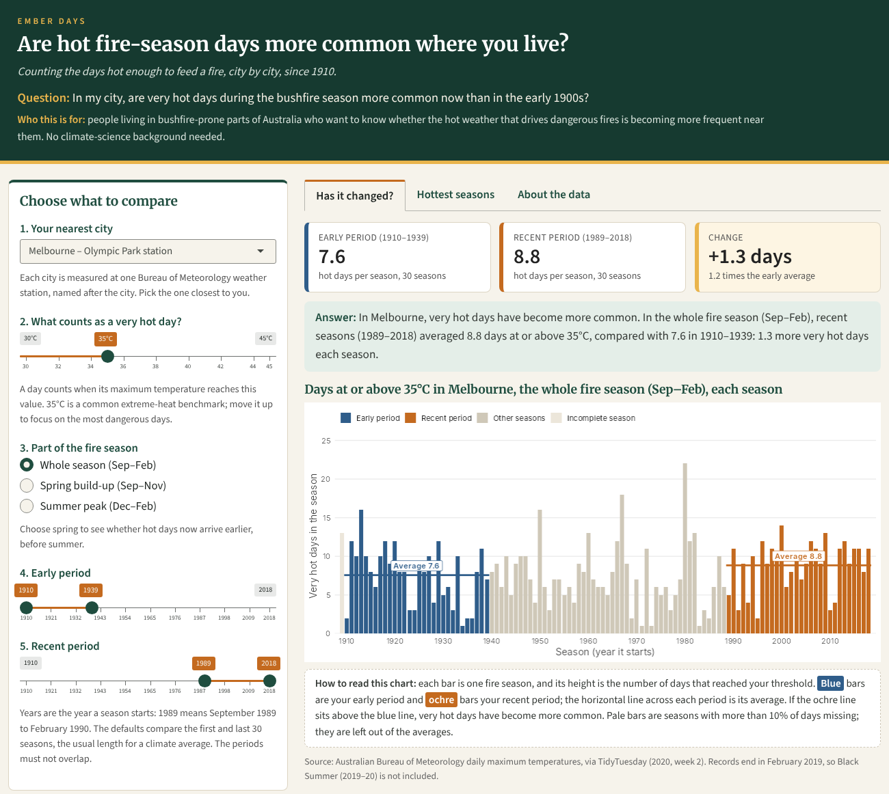
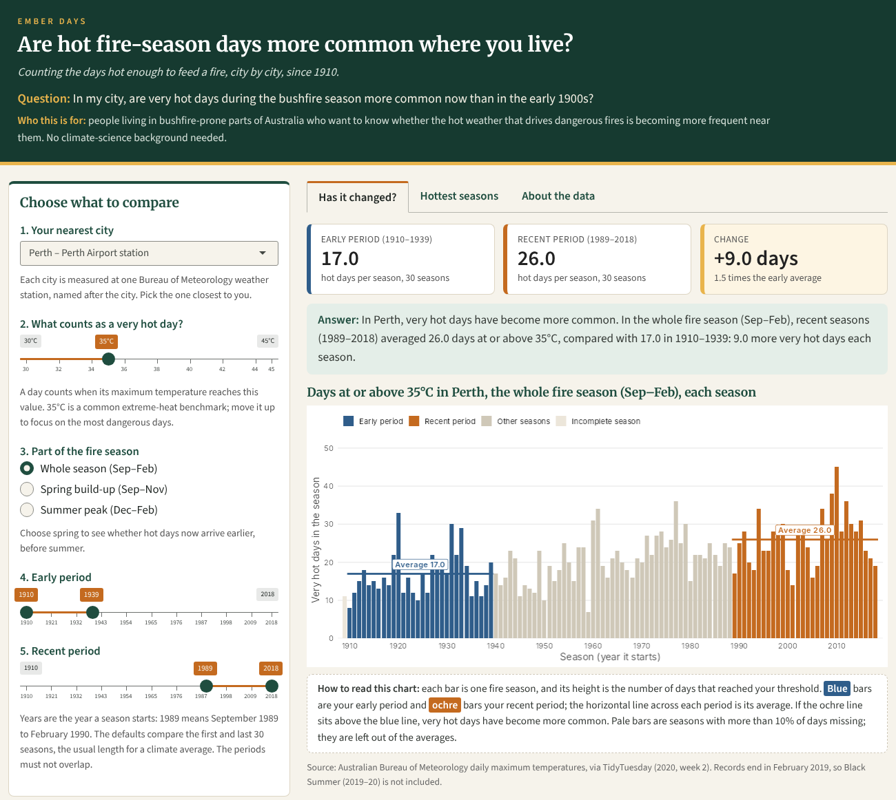
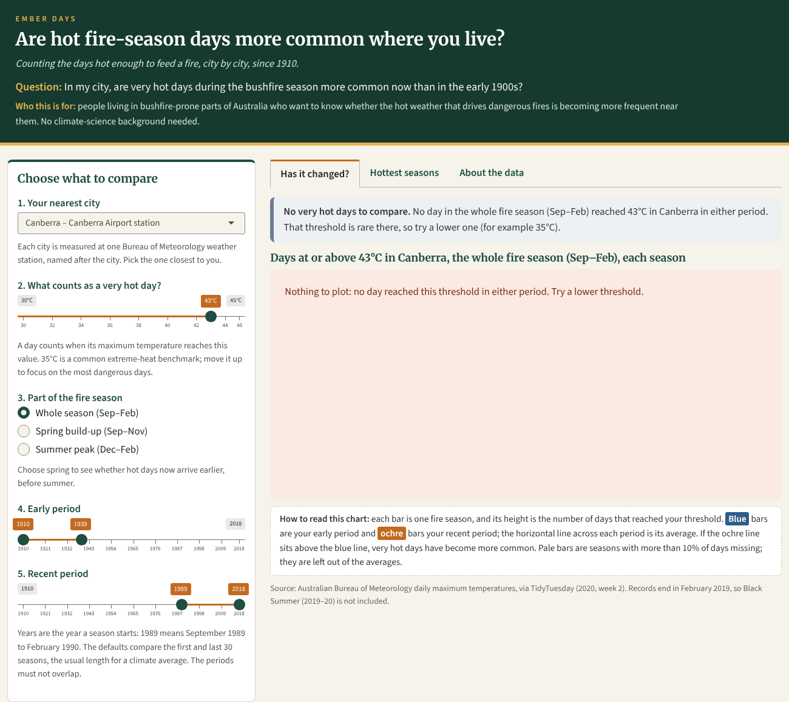
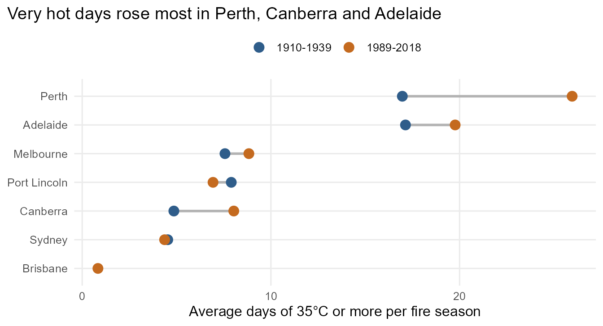

Get started: are hot fire-season days more common where you live?
Source:vignettes/emberdays.Rmd
emberdays.RmdThis guide is for people living in bushfire-prone parts of Australia who want to answer one question:
In my city, are very hot days during the bushfire season more common now than in the early 1900s?
It covers installing the package, launching the app and reading what it shows. The last section repeats the analysis in code for people who use R.
1. Install the package
# install.packages("remotes")
remotes::install_github("ETC5523-2026/etc5523-assignment-4-gauravwarke")2. Launch the app
The app opens in your browser. It uses the temperatures stored inside the package, so you do not need to download anything.

3. Use the controls
Work down the left-hand panel in order:
| Control | What it does | Default and why |
|---|---|---|
| 1. Your nearest city | Chooses the weather station. Each city is one Bureau of Meteorology station. | Melbourne, a large city with a complete record from 1910. |
| 2. What counts as a very hot day? | A day counts when its maximum temperature reaches this value. | 35°C, a common extreme-heat benchmark. Raise it to study the most dangerous days. |
| 3. Part of the fire season | Whole season (Sep–Feb), spring build-up (Sep–Nov) or summer peak (Dec–Feb). | Whole season. Pick spring to check whether hot days now arrive earlier. |
| 4. Early period and 5. Recent period | The two sets of seasons being compared. A season is labelled by the year it starts, so 1989 means September 1989 to February 1990. | The first and last 30 seasons (1910–1939 and 1989–2018). 30 years is the usual length for a climate average. |
4. Read the outputs
The Has it changed? tab answers the question directly:
- Summary boxes give the average number of very hot days per season in each period and the change between them.
- The answer sentence states, in words, whether very hot days have become more common for your choices.
- The bar chart shows every season. Each bar is one season, and its height is the number of very hot days. Blue bars are the early period and ochre bars are the recent period, and the horizontal line across each period marks its average. If the ochre line sits above the blue line, very hot days have become more common. Pale bars are seasons with more than 10% of days missing; they are left out of the averages.
For Perth, the recent average (about 26 days of 35°C or more per season) is well above the early average (about 17):

The Hottest seasons tab ranks the ten seasons with the most very hot days. If most of them fall in the recent period, the extreme seasons are clustering in today’s climate. The About the data tab defines every term and lists the app’s limits.
When the app cannot give a clear answer
The app tells you when a result is missing or weak, and what to do next:
- No hot days: if no day reached your threshold in either period (for example 43°C in Canberra), there is nothing to compare, and the app suggests a lower threshold.

- Too little history: Brisbane’s record starts in 1949, so an early period of 1910–1939 has no seasons. The app explains this and asks you to move the early period.
- Rare days or short periods: fewer than one hot day per season, or fewer than 10 complete seasons, triggers a caution, because one unusual year can swing the average.
- Overlapping periods: if the early period runs into the recent one, the app pauses and asks you to separate them.
5. The same analysis in R
The app is built on two exported functions.
count_hot_days() turns daily temperatures into a count for
each fire season:
library(emberdays)
melb <- count_hot_days(fire_season_temps, city = "Melbourne", threshold = 35)
tail(melb)
#> # A tibble: 6 × 9
#> city season_start season days_possible days_recorded coverage hot_days
#> <chr> <int> <chr> <int> <int> <dbl> <int>
#> 1 Melbourne 2013 2013-14 181 181 1 12
#> 2 Melbourne 2014 2014-15 181 181 1 9
#> 3 Melbourne 2015 2015-16 182 182 1 11
#> 4 Melbourne 2016 2016-17 181 181 1 11
#> 5 Melbourne 2017 2017-18 181 181 1 8
#> 6 Melbourne 2018 2018-19 181 181 1 11
#> # ℹ 2 more variables: hottest <dbl>, complete <lgl>compare_periods() averages the complete seasons in two
periods:
compare_periods(melb, early = c(1910, 1939), recent = c(1989, 2018))
#> # A tibble: 2 × 6
#> period first_season last_season seasons_used mean_hot_days enough_data
#> <chr> <int> <int> <int> <dbl> <lgl>
#> 1 Early 1910 1939 30 7.57 TRUE
#> 2 Recent 1989 2018 30 8.83 TRUERunning both functions for every city shows why the app lets you choose a city: the change is large in some places and close to zero in others.
library(dplyr)
#> Warning: package 'dplyr' was built under R version 4.5.3
library(ggplot2)
#> Warning: package 'ggplot2' was built under R version 4.5.3
by_city <- stations$city |>
lapply(function(city) {
count_hot_days(fire_season_temps, city) |>
compare_periods(early = c(1910, 1939), recent = c(1989, 2018)) |>
mutate(city = city)
}) |>
bind_rows() |>
filter(!is.na(mean_hot_days))
ggplot(by_city, aes(x = mean_hot_days, y = reorder(city, mean_hot_days))) +
geom_line(aes(group = city), colour = "grey70", linewidth = 1) +
geom_point(aes(colour = period), size = 3.5) +
scale_colour_manual(values = c(Early = "#2F5D8A", Recent = "#C46A1F"),
labels = c("1910-1939", "1989-2018")) +
labs(x = "Average days of 35°C or more per fire season", y = NULL, colour = NULL,
title = "Very hot days rose most in Perth, Canberra and Adelaide") +
theme_minimal(base_size = 12) +
theme(legend.position = "top", plot.title.position = "plot",
panel.grid.minor = element_blank())
Brisbane has no early-period point because its record starts in 1949.
What this cannot tell you
These results count hot days, which are one ingredient of fire danger. They do not include wind, humidity, rainfall or fuel, and one station per city may not reflect conditions on bushland edges. Stations can also move or become surrounded by buildings over a century. The record ends in February 2019, before Black Summer.
Source: Australian Bureau of Meteorology Climate
Data Online, via TidyTuesday 2020 week 2. See
?fire_season_temps.